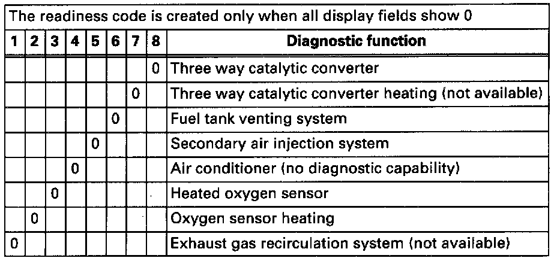

Readiness Code, Reading (scan tool function 15)
Special tools, testers and auxiliary items- VAG 1551/1552 scan tool with VAG 1551/3 adapter cable.
Work sequence:
- Connect VAG 1551/1552 scan tool and, with ignition switched on, select "Engine Electronics" address word 01. Connecting and Selecting "Engine Electronics" address word 01
Indicated on display
- Press buttons -1- and -5- to select "Readiness Code" function 15 and press -Q- button to confirm input.
- Must appear on display when all diagnosis functions have been successfully completed.
Indicated on display
- Press -> button.
- Press buttons -0- and -6- to select "End Output" function 06 and press -Q- button to confirm input.

Indicated on display (possible example)
If one diagnostic checks has not run through successfully:
- Press -> button.
- Create readiness code.
- Read the readiness code. If DTC memory has been erased, repair must be verified via appropriate display group See Readiness code, creating.

Relevance of 8-digit number block for readiness code